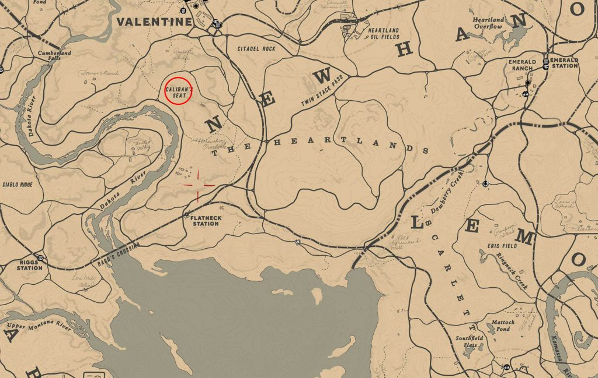

<figure class="imagem-box" (mousedown)="onMouseDown($event)" #figura
    [ngStyle]="{'transform-origin': left + 'px ' + top + 'px', transform: 'scale(' + scale / 100 + ') translate(-'+offsetX+'px, -'+offsetY+'px)',transition:'transform 500ms 0ms, transform-origin '+transitionValor*2+'ms 0ms'}">
    <!-- <span class="center-point" [ngStyle]="{'left': leftPoint + 'px ', 'top':topPoint + 'px'}"></span>
    <span class="offset-point" [ngStyle]="{'left': offsetX + 'px ', 'top':offsetY + 'px'}"></span>
-->
    <!-- <span class="anterior-point" [ngStyle]="{'left': leftAnteriores + 'px ', 'top':topAnteriores + 'px'}"></span> -->
    <div class="pin-mapa-box" *ngFor="let local of outrosLocais" (click)="selecionaLocal(locaisExistentes[local].id)"
        [ngStyle]="{'position':'absolute','color': 'black',top:locaisExistentes[local].coordenadas[1]+'px',left:locaisExistentes[local].coordenadas[0]+'px'}">
        <span class="pin-shadow material-symbols-outlined">
            location_on </span>
        <span class="material-symbols-outlined local-icon"
            [innerHTML]="locaisExistentes[local].atual?'person_pin_circle':'location_on'">
        </span>
    </div>
    
</figure>